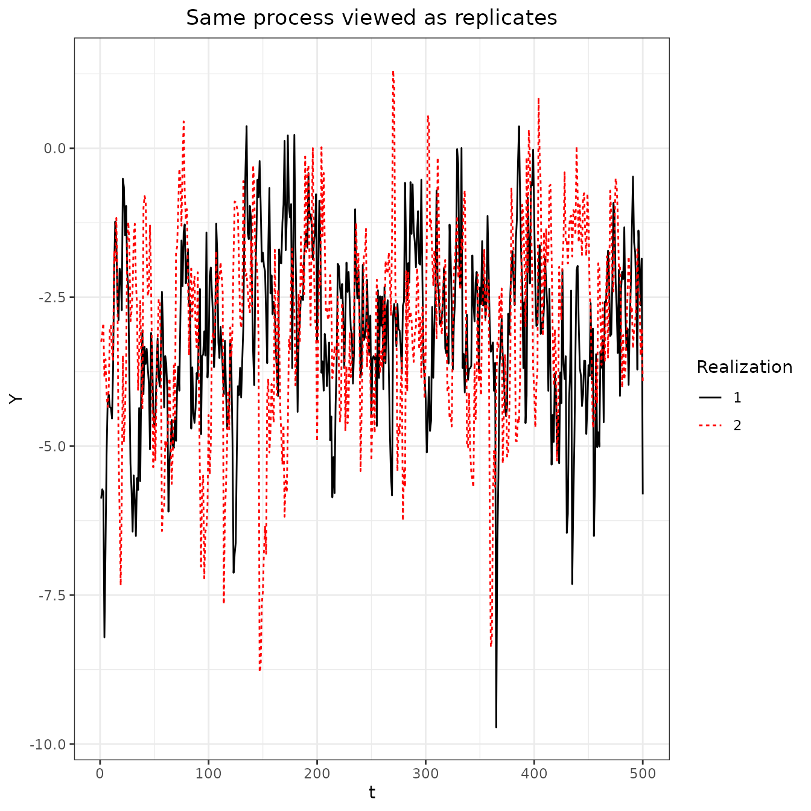
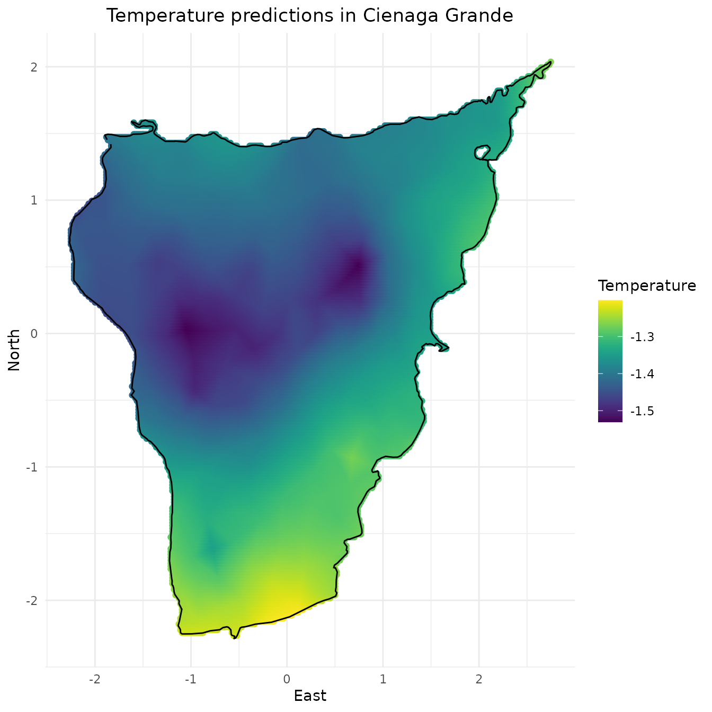

In this vignette we will introduce the feature of replicates, which
allows to include multiple realizations of the stochastic processes that
can be included in the different models offered in
ngme2.
Description
Consider a stochastic process \(\mathbf{W}\) indexed by an index set \(\mathbf{I}\), the idea is to allow the inclusion of replicates of the process in the model.
For example, if one wants to include k realizations of an autoregressive process of order 1 with \(n\) observations in the model one can do so in the following way
\[\begin{align} X^{(j)}_1 &= \epsilon^{(j)}_1\\ X^{(j)}_i &= \alpha X^{(j)}_{i-1} + \epsilon^{(j)}_i, i = 2, \ \cdots,\ n \end{align}\]
where \(X^{(j)}_i\) denotes the \(i \text{-}th\) observation of \(j \text{-}th\) realization of the process for \(i = 1, \ \cdots,\ n\) and \(j = 1, \ \cdots,\ k\), with \(|\alpha| < 1\) and \(\epsilon^{(j)}_1, \ \cdots \ , \epsilon^{(j)}_{n}\) is either i.i.d. NIG or Gaussian noise.
Usage
AR(1) model
The following example will show how to use the replicates feature for an AR(1) model.
Suppose one has a response variable with \(2n\) observations
library(ngme2)
#> This is ngme2 of version 0.6.0
#> - See our homepage: https://davidbolin.github.io/ngme2 for more details.
library(ggplot2)
# creating ar1 process
n <- 500
myar <- ngme2::f(1:n, model="ar1", rho = .75, noise = noise_nig())
W1 <- simulate(myar, seed = 314)[[1]] # simulating one realization of the process
W2 <- simulate(myar, seed = 159)[[1]] # simulating another realization of the process
# Creating the response variable from the process and adding measurement noise
Y <- -3 + c(W1, W2) + rnorm(2 * n, sd = .2)
df <- data.frame(Y, idx = 1:(2 * n), group = rep(1:2, each = n)) # creating the data frame to fit the model later
Note that if both processes are considered as a single one instead of two realizations of the same process, then the first observation of the second realization is assumed to be dependent on the last one of the first process, which might no be desirable in some cases.

This can be seen in the \(\mathbf{K}\) matrix of the model (all the models in the have the same form \(K \mathbf{W} = \mathbf{\ epsilon}\)), for instance, consider the following little example to illustrate the last statement.
no.replicates <- ngme2::f(1:6, model="ar1", rho = .5, noise = noise_normal())
replicates <- ngme2::f(rep(1:3, 2),
model = "ar1",
rho = .5,
noise = noise_normal(), replicate = rep(1:2, each = 3)
)
# K matrix from the model without replicates
replicates$operator$K
#> 3 x 3 sparse Matrix of class "dgCMatrix"
#>
#> [1,] 0.8660254 . .
#> [2,] -0.5000000 1.0 .
#> [3,] . -0.5 1
# K matrix from the model with replicates
no.replicates$operator$K
#> 6 x 6 sparse Matrix of class "dgCMatrix"
#>
#> [1,] 0.8660254 . . . . .
#> [2,] -0.5000000 1.0 . . . .
#> [3,] . -0.5 1.0 . . .
#> [4,] . . -0.5 1.0 . .
#> [5,] . . . -0.5 1.0 .
#> [6,] . . . . -0.5 1It is clear how the link between the last observation of the first process dissapears by looking at the \(\mathbf{K}_{4, 3}\) entry of the matrix \(\mathbf{K}\).
With that being said, one can fit the model using the
ngme function as shown below.
# fitting the model
mod.replicates <- ngme(
formula = Y ~ f(
c(1:n, 1:n),
model = "ar1",
noise = noise_nig()
),
replicate = df$group,
data = df,
control_opt = control_opt(
print_check_info = FALSE
)
)
#> Starting estimation...
#>
#> Starting posterior sampling...
#> Posterior sampling done!
#> Note:
#> 1. Use ngme_post_samples(..) to access the posterior samples.
#> 2. Use ngme_result(..) to access different latent models.
mod.replicates
#> *** Ngme object ***
#>
#> Fixed effects:
#> (Intercept)
#> -3.05
#>
#> Models:
#> $field1
#> Model type: AR(1)
#> rho = 0.752
#> Noise type: NIG
#> Noise parameters:
#> mu = -0.0292
#> sigma = 1.02
#> nu = 1.16
#>
#> Measurement noise:
#> Noise type: NORMAL
#> Noise parameters:
#> sigma = 0.171
#>
#>
#> Number of replicates is 2SPDE Matern model
The following data is taken from the swamp of Cienaga Grande in Santa Marta, Colombia. There is a total of 114 locations where some properties of the swamp were measured. Those measurements were taken twice, however there is no information available about their chronological order so this data cannot be treated as spatiotemporal, despite that, the multiple measurements can be treated as replicates.
In this particular case the temperature is the feature that will be modeled.
# library(ngme2)
library(ggplot2)
# reading the data and the boundary of Cienaga Grande
data(cienaga)
data(cienaga.border)
# scale the coords
cienaga.border[, 1] <- (cienaga.border[, 1] - mean(cienaga$East)) / sd(cienaga$East)
cienaga.border[, 2] <- (cienaga.border[, 2] - mean(cienaga$North)) / sd(cienaga$North)
cienaga <- within(cienaga, {
East_scale <- (East - mean(East)) / sd(East)
North_scale <- (North - mean(North)) / sd(North)
})
# creating label for the measurement group
cienaga$measurement <- rep(1:2, each = (n <- nrow(cienaga) / 2))
Now we briefly show how to fit the model and how to predict for locations where the feature is unknown.
# creating the mesh
mesh <- fmesher::fm_mesh_2d(
loc.domain = cienaga.border,
max.edge = c(0.4, 1),
max.n = 500
)
mesh$n
#> [1] 457
# fitting the model
fit <- ngme(
formula = temp ~ 1 +
f(as.matrix(cienaga[, 1:2]), model = "matern", mesh=mesh,
name = "spde", noise = noise_nig()),
data = cienaga,
replicate=cienaga$measurement,
control_opt = control_opt(
estimation = T,
iterations = 500,
n_slope_check = 10,
n_parallel_chain = 4,
print_check_info = F
),
debug = F,
)
#> Starting estimation...
#>
#> Starting posterior sampling...
#> Posterior sampling done!
#> Note:
#> 1. Use ngme_post_samples(..) to access the posterior samples.
#> 2. Use ngme_result(..) to access different latent models.
fit
#> *** Ngme object ***
#>
#> Fixed effects:
#> (Intercept)
#> -6.28e-14
#>
#> Models:
#> $spde
#> Model type: Matern
#> kappa = 0.676
#> Noise type: NIG
#> Noise parameters:
#> mu = 0.693
#> sigma = 1.32
#> nu = 1.32
#>
#> Measurement noise:
#> Noise type: NORMAL
#> Noise parameters:
#> sigma = 0.998
#>
#>
#> Number of replicates is 2With the fitted model, one can do predictions as follows.
nxy <- c(300, 200)
projgrid <- rSPDE::rspde.mesh.projector(
mesh = mesh,
xlim = range(cienaga.border[, 1]), ylim = range(cienaga.border[, 2]),
dims = nxy
)
xy.in <- splancs::inout(projgrid$lattice$loc, as.matrix(cienaga.border[, 1:2]))
coord.prd <- projgrid$lattice$loc[xy.in, ]
lp <- predict(fit, map = list(spde=coord.prd)) # making the predictions
# getting the mean of the predictions for each replicate
preds_mean <- lp[["mean"]]